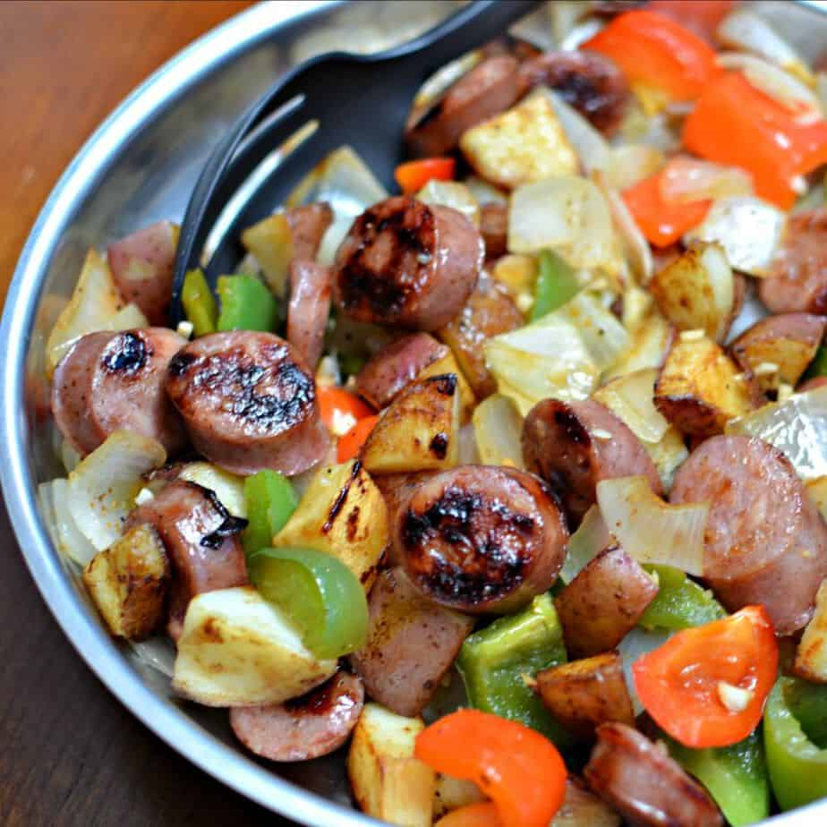

Sausage & Potato Skillet

Description
Sausage and potato skillet is a quick and easy, yet tasty dish.
Ingredients
- Small gold potatoes: 1 lb
- Olive oil: 1 Tbsp
- Red bell pepper: 1 (sliced vertically)
- Red onion: 1 (1/2" chunks)
- Garlic: 1 clove (minced)
- Petite peas: 1/2 cup (frozen)
- Dried thyme: 1 tsp
- Salt & pepper: to taste
- Fresh parsley: 1 Tbsp (chopped)
Steps
-
Place potatoes in a large pot and cover with salted water; bring to a boil. Reduce heat to medium-low and simmer until fork tender, 10 -12 mins; drain.
-
Heat olive oil in a large skillet over medium heat; cook and stir smoked sausage in skillet until browned on both sides, about 3 mins. Remove sausage from skillet to a paper towel-lined plate; leave drippings in pan.
-
Quarter the potatoes. Cook and stir potatoes, red pepper, green pepper, onion in the skillet until potatoes are starting to brown, 8-10 mins; add oil as needed. Stir in garlic; cook until fragrant, about 30 secs.
-
Return sausage to the skillet, stir in peas and thyme, and cook until peas are heated through, 3-5 mins. Season with salt and pepper; garnish with chopped parsley.
Navigation
Back to homepage
Back to top